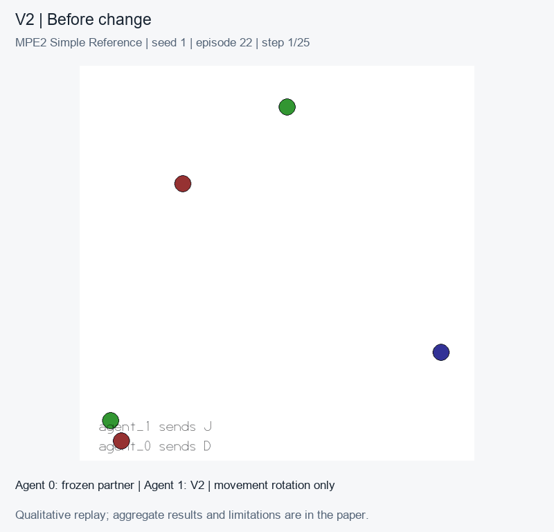

Cooperative multi-agent reinforcement learning · Working manuscript · Three completed LIAM seeds
Selective Adaptation to Communication and Actuation Shifts
When cooperation fails, should an agent reinterpret incoming messages or correct how its movement commands are executed?
What we tested
V2 combines a frozen recurrent MAPPO policy, a learned receiver memory and local motor identification. We evaluate no change, message permutation, actuator rotation and both changes in MPE2 Simple Reference, and compare with simpler corrections and a port of the official LIAM core.
Motor correction recovers much of the frozen policy's performance. Selective routing has not established an advantage over simpler rules. LIAM wins the message-only and combined conditions in two of three seeds; its weak third seed affects the aggregate ranking. This is a descriptive study, not a peer-reviewed claim of superiority.
A trained policy in action

Qualitative replay, not aggregate evidence. Checkpoint hashes and episode selection · Video for sharing
Paper
If your browser does not display PDFs, download the manuscript.
Built on prior work
Environment: Farama MPE2 / Simple Reference, continuing the MPE work of Lowe et al. and Mordatch & Abbeel. Base policy: MAPPO, Yu et al. Comparator: LIAM, Papoudakis, Christianos & Albrecht. Our contribution is the intervention harness, adapter composition and evaluation.
Connection to the PSC
The planned PSC extension would support authoring games, controlled interventions and reproducible agent evaluations. These experiments use MPE2; the proposed Relay Workshop environment and engine extensions have not yet been evaluated.